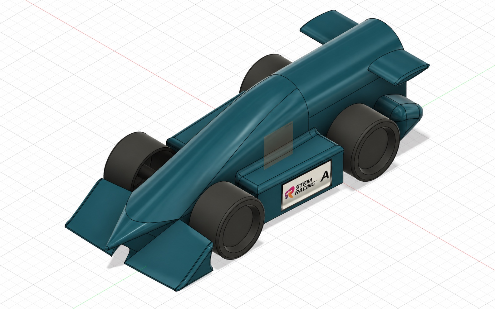

The car
20 metres. One second.
No engine, no driver, no steering. Just a block of foam, a puff of CO₂ and a lot of thinking about air.
Our design
Our STEM Racing car
Our CAD design pairs a pointed nose and split front wing with low sidepods and a rear wing mounted directly to the cartridge housing. The body is shown in Stoop’s blue-green teal.

3D lab
Take it apart. Put it in the tunnel.
One model, three ways to look at it. Spin the finished car under studio lights, pull every component apart, or switch on the wind tunnel to see where the air speeds up and where it stalls.
Anatomy
What's on a STEM Racing car
Every car on the grid has the same basic parts, and the regulations set limits for each one. The skill is in what you do inside those limits.
- BodyMachined on a CNC router from a single block of lightweight model foam. Its shape decides most of the drag.
- Cartridge chamberHolds the 8 g CO₂ cartridge. At the start a pin pierces it and the escaping gas pushes the car forward.
- WingsRequired by the rules, usually 3D printed. On a car this light they are about guiding air cleanly, not making downforce.
- WheelsFour of them, all must touch the track. Low-friction bearings and light rims save hundredths of a second.
- Tether guidesTwo small eyelets under the car. A line runs through them down the whole track to keep the car straight.
Aerodynamics
Why air is the enemy
The cartridge gives every car roughly the same push. What separates fast from slow is how much of that push is wasted.
Drag grows with the square of speed. Double the speed and the air pushes back four times as hard. At race pace, drag is the biggest force slowing the car.
Fdrag = ½ · ρ · v² · Cd · A
ρ air density · v speed · Cd drag coefficient · A frontal area
- Shrink AA smaller frontal area means less air to push out of the way. The rules set minimum sizes, so we design right up to them.
- Lower CdSmooth, teardrop-like shapes let air close up behind the car instead of tumbling into a wake. Think of a falcon in a stoop.
- Cut massA lighter car accelerates harder from the same thrust. There is a minimum weight, and the best cars sit just above it.
- Free the wheelsFriction in the bearings and on the tether line steals speed for the whole 20 metres.
Time attack simulator
Tune it. Then beat the lights.
Set up the car, press Arm, wait for all five lights to go out, then hit Launch (or the space bar). Your total is your reaction time plus the car's run. The run plays in real time, so do not blink.
- Reaction
- 0.000
- Track time
- 0.000
- Top speed
- 0 km/h
- Total
- 0.000
Predicted track time for this setup:
This is a simplified physics model for learning, not our test data. It assumes a thrust curve for an 8 g cartridge and ignores things like launch wobble.